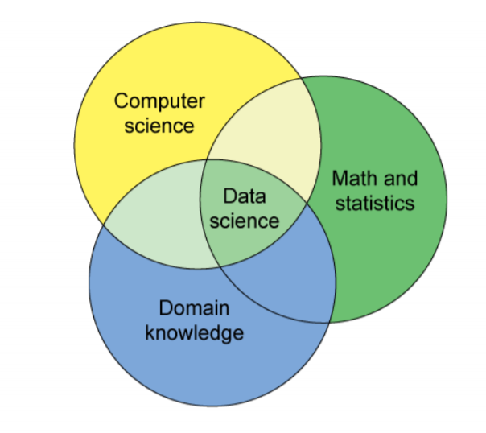
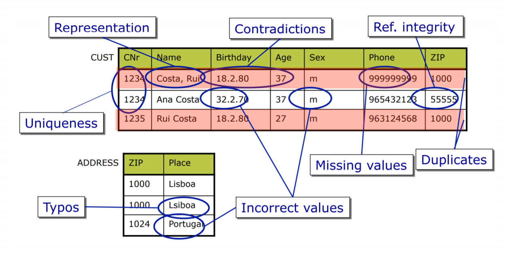

Week 2
Data Cleansing
- Data Cleansing/Cleaning is removing or correcting data that detracts from the quality/usability of the data.
- Data sets can be messy and messy data can be easilty misinterpreted.
- Data Cleansing will increase the quality of the data you have
- More consistent
- More complete
- More accurate
- More uniform
- Unit Mismatch - dont know the unit value of something queried 100s 1000s 10000s ?
- Entity Resolution - query something but it has a different labelling in the db
- Missing Data - query something that doesnt exist
There are many views of dirty data. Lets look at some of them.
Statistics View
- Distortion: some sames are corrupted by a process
- Selection Bias: likelihood of a sample dempends on its value
- Left and right censorship: users come and go from our scrutiny
- Dependence: samples are never truly independent
Database View
- Wow look at all this data
- some of it is wack tho...
- missing, corrupted, wrong, duplicate...
Domain Expert
- This dont look right
- something went wrong
- I should know what it should look like man...
Data Scientist
- Man's got some bit of all this knowledge!

